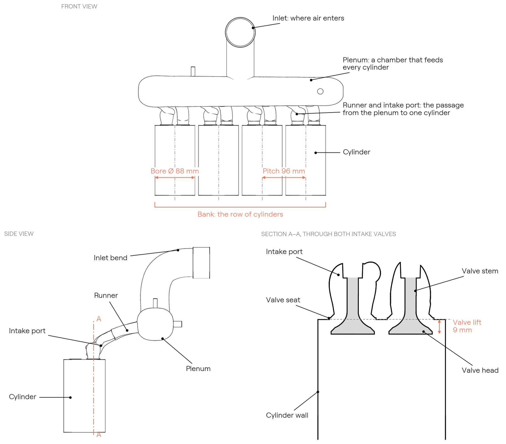
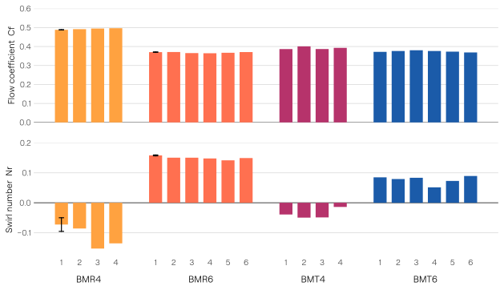
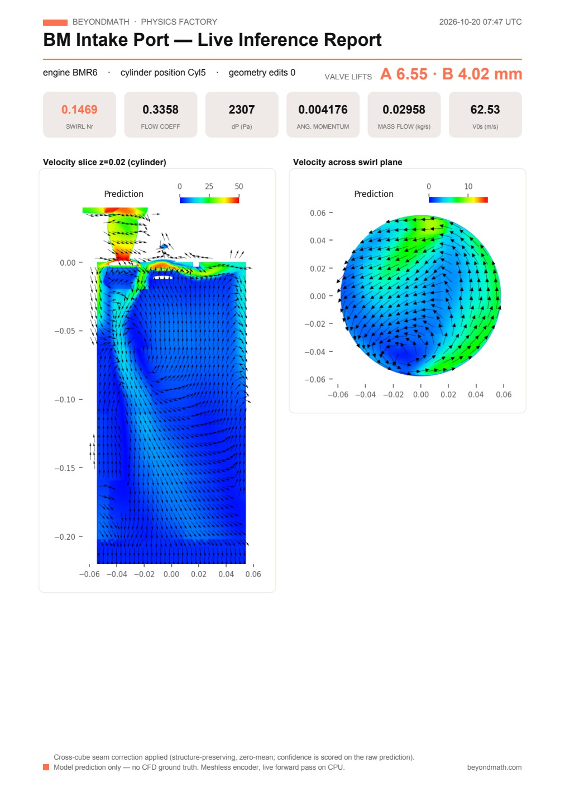
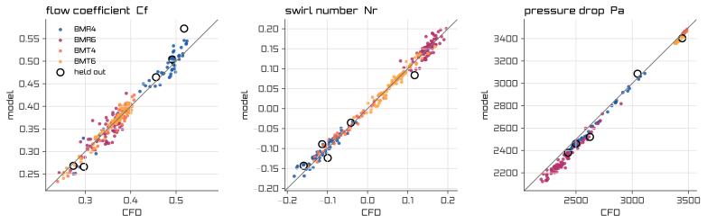

Physics AI · internal flow · engine intake
Predicting intake flow at any valve lift
BeyondMath's foundational AI model of physics predicts the flow through an engine's intake system directly from its geometry. It needs no mesh and no solver, and each case takes about 15 seconds on a laptop CPU. This article applies the model to four intake designs and shows the velocity field at any combination of valve lifts in any cylinder, the standard flow-bench metrics, and a comparison with CFD.
The intake flow problem
A piston engine draws air into each cylinder through the intake manifold, the intake ports and the intake valves. The amount of air and the way it moves inside the cylinder determine the engine's power, fuel consumption and emissions. Engineers describe intake flow with two numbers. The flow coefficient measures how freely air passes the valves. The swirl number measures how strongly the air rotates about the cylinder axis, which governs how well fuel and air mix before combustion. Every intake design is a trade-off between generating more swirl and passing enough air.
Engine manufacturers in automotive, commercial vehicle, off-highway, marine and power generation all have to design for intake flow. The port and manifold geometry determine it. It changes with valve lift, from one cylinder to the next on the same manifold, and between the two intake valves when they open by different amounts.
The drawing below labels the parts of an intake system that this article refers to, using BMR4, one of the four engines in this article, as the example. Air enters at the inlet and collects in the plenum. A runner and an intake port then carry it to each cylinder, and two intake valves let it in. The valve lift is the distance each valve opens. The bore is the cylinder diameter, and the bank is the row of cylinders. The inlet, plenum and runners together form the intake manifold.

Current workflow constraints
Engineers measure intake flow on a flow bench or simulate it with CFD. Both are expensive for each data point.
- Flow bench testing. A flow bench draws air through a cylinder head at a fixed pressure difference and records the flow rate and swirl at a series of fixed valve lifts. Each configuration needs a physical part, and each lift is a separate measurement.
- CFD. Each combination of geometry and valve lift is a separate case that has to be meshed, solved and post-processed, which typically takes hours of compute. Covering every cylinder across the full lift range multiplies that cost by the number of cases.
- Limited coverage. Most programmes therefore test one representative cylinder at a handful of valve lifts.
BeyondMath's foundational AI model of physics returns the velocity field directly from the surface geometry and the boundary conditions, with no mesh and no solver iterations. We compute the bench metrics from each prediction with the same post-processing we use on the CFD results. The rest of this article applies the model to four intake designs, BMR4, BMR6, BMT4 and BMT6, and compares the results with CFD.
This post in numbers
4
engine designs
20
cylinders
751
predictions behind this post
15 s
per prediction on a laptop CPU
The four engines
We picked four designs that differ in the ways that matter most for intake flow. Bores range from 88 to 116 mm, and there are two four-cylinder and two six-cylinder engines. BMR4 has a plenum with short runners, as in the drawing above. BMR6 has a long curved runner for each cylinder. BMT4 and BMT6 use log manifolds, which are single straight pipes along the bank with a short branch to each port, fed from opposite ends. BMR4's two intake valves sit side by side along the bank. The other three engines have their valves turned across the bank, which changes which valve drives the swirl and which one opposes it.
We set up each design the way it would be on a flow bench, with the inlet, manifold, ports, both intake valves and the porous element the bench places in the cylinder. The model receives only the geometry and the boundary conditions.
BMR4
- Cylinders
- 4
- Bore
- 88 mm
- Cylinder pitch
- 96 mm
- Intake valve head
- 2 × 27 mm
- Lift range
- 2–12 mm, each valve
- Shown as
- cast aluminium, cast iron
Plenum with short runners and a top-entry inlet bend. Valve pair parallel to the bank.
BMR6
- Cylinders
- 6
- Bore
- 116 mm
- Cylinder pitch
- 132 mm
- Intake valve head
- 2 × 34 mm
- Lift range
- 2–12 mm, each valve
- Shown as
- glass-filled nylon, cast iron
Split plenum feeding six long, curved individual runners. Valve pair on a diagonal.
BMT4
- Cylinders
- 4
- Bore
- 102 mm
- Cylinder pitch
- 118 mm
- Intake valve head
- 2 × 32 mm
- Lift range
- 2–12 mm, each valve
- Shown as
- grey cast iron
Log manifold fed from a vertical inlet through a tapered neck. Valve pair rotated across the bank.
BMT6
- Cylinders
- 6
- Bore
- 114 mm
- Cylinder pitch
- 134 mm
- Intake valve head
- 2 × 35 mm
- Lift range
- 2–12 mm, each valve
- Shown as
- cast aluminium, cast iron
Long log manifold fed from one end through a bent inlet pipe. Valve pair rotated across the bank.
Moving the valves independently
To look at the flow, we cut each cylinder along the plane through both intake valve axes. Flow labs use the same section when they want to see the valve jets. The two valves follow separate lift schedules between 2.4 and 11.6 mm, out of phase with each other, so the share of flow through each port keeps changing.
At every step we regenerate the port and valve geometry and ask the model for the velocity field on the section. As the valves pass each other, you can see one jet weaken while the other gets stronger.
- The valves move the way each design's CAD rule moves them: the head and lower stem translate with lift, and the upper stem stretches up to the guide.
- We predict the section directly on a 0.5 mm grid, so the full 3D field is never computed for these films.
- Each loop replays the same predictions, and we don't interpolate between steps.
Small changes in lift
Here valve A goes from 5 to 9 mm in 0.1 mm steps while valve B stays at 7 mm. Every step is a new geometry and a new prediction. Over the sweep, the jet through the seat gap gets thicker as the valve opens, and the shear layer under the valve head moves with it.
A single step doesn't tell you much on its own. Around the valves the field changes by about 1.5% from one frame to the next, and only about a fifth of that is the trend with lift. The rest is the model's own step-to-step variation. Lower in the cylinder the variation is larger, around ten times the trend per step. Over the full 4 mm sweep the trend is clear, so it's the sweep as a whole that's worth watching, not any one tenth of a millimetre.
Differences between cylinders
Cylinders on the same manifold don't breathe the same way. Runner length, the angle at which each branch leaves the plenum and its distance from the inlet all affect the flow at the valve seat, and the differences tend to appear in swirl before they appear in flow coefficient. Because the model sees each cylinder in place on its manifold, it picks these differences up. In the film below we open up BMR4 one cylinder at a time.

The bench report
The platform turns any prediction into a one-page report in the layout a flow lab uses. The report gives six standard flow-bench results and two sections through the predicted flow.
- Mass flow (kg/s) is the mass of air that passes through the port into the cylinder each second.
- Pressure drop, dP (Pa) is the pressure difference between the inlet and the measurement plane in the cylinder. It drives the flow.
- Isentropic velocity, V0s (m/s) is the speed the air would reach if the whole pressure drop turned into speed with no losses. The flow coefficient and the swirl number use it as their reference speed.
- Flow coefficient, Cf is the actual mass flow divided by the flow that an ideal, loss-free opening the size of the valve seats would pass at the same pressure drop. A higher value means the port passes air more freely. The four designs here range from 0.37 to 0.50 with both valves at 7 mm.
- Angular momentum flux (N·m) is the rotation the air carries through the swirl plane, which lies across the cylinder below the valves.
- Swirl number, Nr is the angular momentum flux normalised by the mass flow, the bore and the isentropic velocity (Ricardo method). It measures how strongly the air rotates about the cylinder axis, and its sign gives the direction of rotation.
The left-hand section shows the velocity on a vertical plane through the cylinder, and the right-hand section shows the velocity across the swirl plane. The platform rebuilds the report from a new prediction whenever the cylinder, a valve lift or the geometry changes.

Comparison with CFD
We computed the same metrics in the same way from the model's prediction and from the CFD solution, for every simulated case of the four designs. Both use the same planes, the same seat area and the same Ricardo method. The only difference is where the velocity field came from.
Across 264 cases the model's flow coefficient is within 0.011 of the CFD value on average, its swirl number within 0.008, and its pressure drop within 1.6%.
Model against CFD · 264 cases
0.011
mean absolute error, flow coefficient
0.008
mean absolute error, swirl number
1.6%
mean error, pressure drop

Training data
The model was trained on these sweeps, apart from 5 cases we held out for validation. So this chart shows how closely it reproduces its training data across every engine and cylinder. It is not a blind test. On the 5 held-out cases the mean absolute errors are 0.022 in flow coefficient, 0.021 in swirl number and 54 Pa in pressure drop. We measure accuracy on new geometry with designs held out entirely, and every prediction the platform makes comes with a confidence score.
Predicting the whole engine
BMR4, BMR6, BMT4 and BMT6 are engine designs built for this study, not production engines; the surface finishes in the renders are illustrative. Flow-bench conditions: 100.5 kPa at the inlet, 97.0 kPa at the outlet, porous element in the bore. Flow coefficient is referenced to seat area; swirl number by the Ricardo method on the plane 1.75 bores below the deck. All fields and metrics are model predictions except the CFD values marked as such. Cylinder 1 of BMR4 and BMR6 was not simulated at 7/7 mm; its bars in the per-cylinder chart are the mean of the 6.8/7.2 and 7.2/6.8 mm cases. Films are rendered from the predictions with a path tracer; nothing is interpolated between prediction steps, and the encoder's sampling layout is held fixed per cylinder so that differences between steps come from the geometry. Timings were measured on a laptop CPU (Apple M3 Max), with no GPU.
Get in touch
Design the undiscovered
On your own programme, the model runs on your heads and manifolds, is trained against your data and stays inside your firewall.
Talk to us